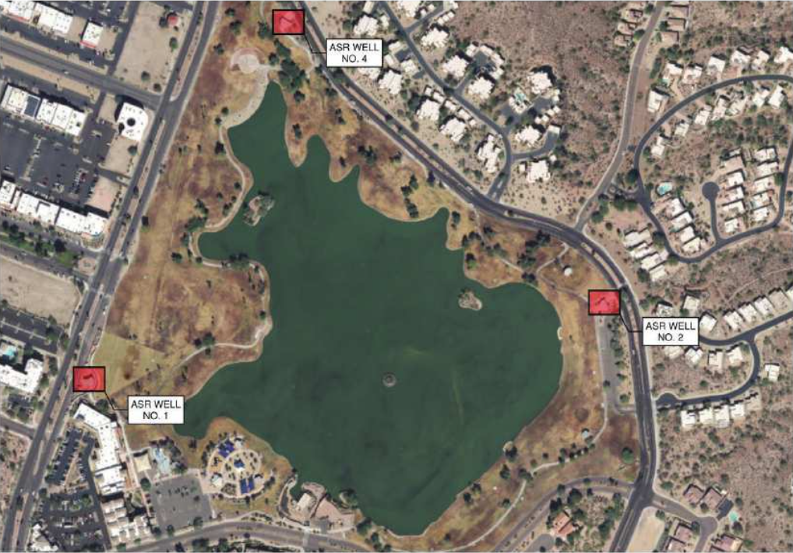
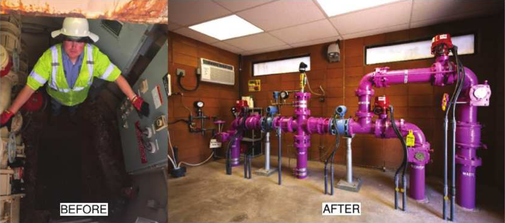
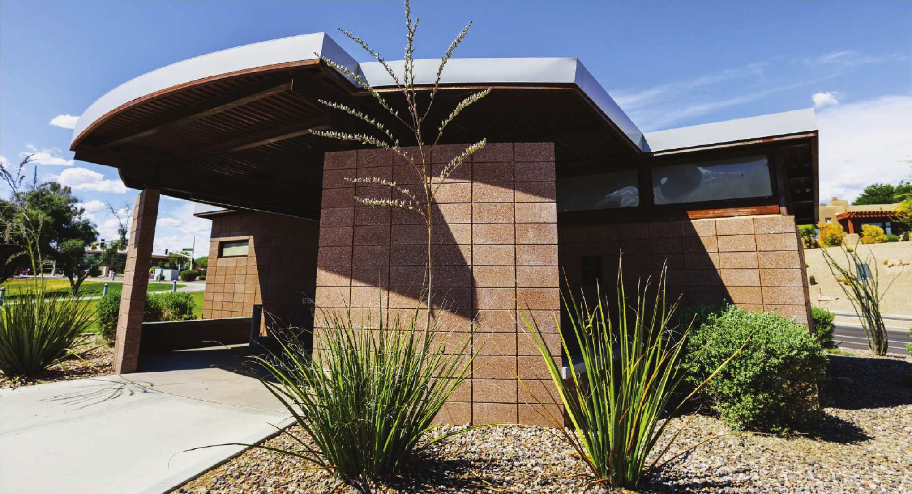
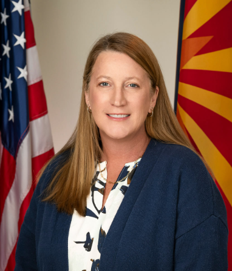

L2-L3 · Flow and Positioned Relationships

The District’s ASR system supports Fountain Hills’ longstanding commitment to water reuse. During periods of low irrigation demand, reclaimed water is stored underground in ASR wells and later recovered during periods of peak demand to irrigate local parks and golf courses. Several of the wells serving Fountain Park and Lake were originally installed more than twenty years ago within underground steel vault structures.
Over time, the steel vaults became severely corroded and exceeded their useful service life. In addition to material deterioration, the below ground configuration required District staff to routinely enter confined spaces to perform daily operation and maintenance activities, creating ongoing safety and accessibility concerns.
To address these challenges, the Fountain Hills Sanitary District partnered with the Town of Fountain Hills, Wilson Engineers, MGC Contractors, Hunter Contracting, and a local architect to implement a phased ASR Well Vault Replacement program across three well sites within Fountain Park. The project included improvements to ASR Wells No. 1, No. 2, and No. 4.
“The Town, the District, and the general public that use the famous Fountain Park are all winners with this project." - Fountain Hills Sanitary District Manager Dana Trompke
Original or Innovative Application of New or Existing Techniques
ASR Wells No. 2 and No. 4 located on the north and east sides of Fountain Lake, were equipped within new dual use facilities that house critical ASR equipment while also providing much needed public restroom amenities for park visitors. The buildings were designed to complement the surrounding park architecture and blend into the highly visible public setting near the lake, amphitheater, and pedestrian pathways.
Educational signage installed at the facilities highlights the District's recycled water process, illustrating the water cycle from Central Arizona Project delivery and treatment through wastewater collection, aquifer storage, recovery, and irrigation reuse. The displays reinforce the district's long standing “Recycles Every Drop” commitment while helping visitors better understand the importance of water reuse infrastructure in the desert Southwest.
ASR Well No. 1, located along the western side of Fountain Park near Saguaro Boulevard, presented a different set of design challenges. While the site did not require public restroom facilities, the project required careful coordination with pedestrian pathways, existing utilities, flood control infrastructure, and nearby public art features. Six Presidential statues and associated Bill of Rights signage were relocated with approval from the Town’s Public Art Commission to improve pedestrian circulation and maintain the character of the area.
The replacement of the underground vault at Well No. 1 with a new above ground control room significantly improved safety and accessibility for District operations staff. The facility was positioned behind an existing ramada to preserve views of the fountain, while sidewalks were realigned to accommodate operational vehicle access without disrupting heavily used pedestrian pathways.

Social and Economic Considerations
Because the wells are located throughout one of the Town's busiest public spaces, the project required careful phasing and coordination to maintain uninterrupted ASR functionality and minimize impacts to park operations. Only one of the five ASR wells could be taken out of service at a time, and each well needed to be returned to operation within a two-month period to meet system demands.
Construction sequencing also had to accommodate major community events held at Fountain Park, including local high school graduation ceremonies near the amphitheater adjacent to Well No. 4. Maintaining safe public access during construction required close coordination with Town staff, adaptive phasing strategies, and ongoing communication with park users.
Complexity
Wilson Engineers, serving as the design engineer and construction administration consultant, applied extensive regional ASR experience to develop flexible construction approaches tailored to each site.
Hunter Contracting and MGC Contractors implemented the phased improvements using a Construction Manager at Risk delivery method that help the District maintain budget and schedule control while minimizing disruptions to park visitors and ongoing operations.
The project team also incorporated several cost saving measures throughout construction. Certain equipment components, including the well pump, instrumentation equipment, and fiber optic systems, were procured directly by the District to support schedule and budget management. Existing downhole flow control valves were reused and tested by District staff prior to start up, reducing replacement costs while maintaining operational reliability. Similar piping systems were implemented at each site to ease the operator functionality.
Beyond the infrastructure improvements themselves, the project demonstrates how utility upgrades can provide meaningful community benefits when paired with thoughtful site planning and public-focused design. New restroom facilities, improve pedestrian circulation, ADA compliant access routes, educational features, and enhanced architectural integration transformed the facilities into community assets rather than purely operational infrastructure.

L4-L5 · Layers, Shapes, and Fallback

Meeting and Exceeding Owner Needs
According to Fountain Hills Sanitary District Manager Dana Trompke, P.E., the project has been well received by both District staff and the local community.
“The Town, the District, and the general public that use the famous Fountain Park are all winners with this project,” Trompke said. “It has been deemed a success by the local community as evidenced by the numerous compliments we receive on the design of the facilities and the appreciation expressed for providing much needed public amenities. From the district's operational perspective, the most successful outcome is providing district staff with safe access to critical infrastructure that must be operated and maintained on a daily basis.”
The phased ASR Well Vault Replacement project strengthened the reliability and maintainability of Fountain Hills’ recycled water infrastructure while preserving the character of one of the Town's most important civic spaces. By integrating operational improvements with thoughtful public design, the project demonstrates how infrastructure investments can successfully support both long-term sustainability and community quality of life.
L6 · Documentation and Testing
Link the completed composition plan, support/fallback record, tests, credits, and disclosure.
Composition Plan Documentation and Tests